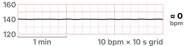
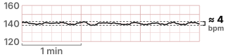
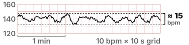
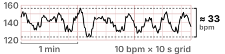
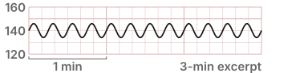
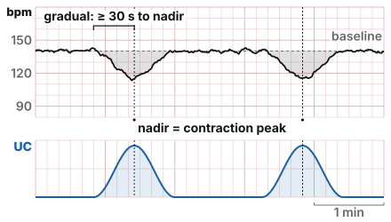
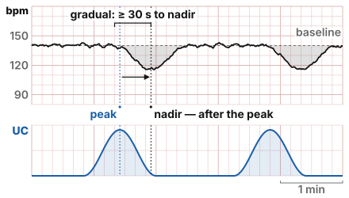
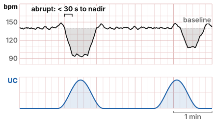
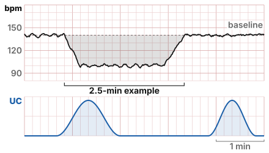

Gradual, symmetric. Nadir coincides with contraction peak — a mirror image. Head compression.

Gradual. Onset, nadir, recovery follow contraction onset, peak, end. Often shallow — easy to miss. Recurrent → Cat II/III by variability.

Abrupt (< 30 s to nadir), ≥ 15 bpm, lasting ≥ 15 s and < 2 min. V, U, or W shape; timing varies.

≥ 15 bpm below baseline for ≥ 2 min but < 10 min. ≥ 10 min = baseline change. Look for a cause now. 29 · A
| Points | 0 | 1 | 2 | 3 |
|---|---|---|---|---|
| Dilation (cm) | Closed | 1–2 | 3–4 | 5–6 |
| Effacement (%) | 0–30 | 40–50 | 60–70 | ≥ 80 |
| Station | −3 | −2 | −1, 0 | +1, +2 |
| Consistency | Firm | Medium | Soft | — |
| Position | Posterior | Mid | Anterior | — |
| miSOPROStol PV | 25 mcg q3–6h |
| miSOPROStol PO | 20–25 mcg q2h (optimal) or 50–100 mcg q4h · SL/buccal not routine |
| Dinoprostone | Prepidil endocervical gel 0.5 mg q6h, max 1.5 mg/24 h · Cervidil insert 10 mg ≤ 12 h |
| Balloon | 30–80 mL; little gain after 6 h. Foley 30 mL + PV misoprostol 25 mcg: combination shortens induction (CPG 9) |
| Start milliunits/min | Increase milliunits/min | Interval | |
|---|---|---|---|
| Low-dose | 0.5–2 | 1–2 | 15–40 min |
| High-dose | ≥ 4 | 3–6 | 15–40 min |
| Standard | Ampicillin 2 g q6h + gentamicin 2 mg/kg → 1.5 mg/kg q8h (or 5 mg/kg q24h) |
| Penicillin allergy, mild | Cefazolin 2 g q8h + gentamicin |
| Penicillin allergy, severe | (Clindamycin 900 mg q8h or vancomycin 1 g q12h) + gentamicin. GBS+ with clindamycin resistance or unknown susceptibility → vancomycin. |
| Cesarean | +1 dose after; add clindamycin 900 mg or metronidazole 500 mg, at least 1 dose |
| Sign | 0 | 1 | 2 |
|---|---|---|---|
| Color | Blue / pale | Acrocyanotic | Pink |
| Heart rate | Absent | < 100 | ≥ 100 |
| Reflex irritability | None | Grimace | Cry / active withdrawal |
| Muscle tone | Limp | Some flexion | Active motion |
| Respiration | Absent | Weak, irregular | Good, crying |
| Median | 5th–95th | |
|---|---|---|
| UA pH | 7.27 | 7.12–7.35 |
| UA pCO₂ (mmHg) | 55 | 42–74 |
| UA base excess (mmol/L) | −3 | −9.3 to +1.5 |
| UV pH | 7.35 | 7.23–7.44 |